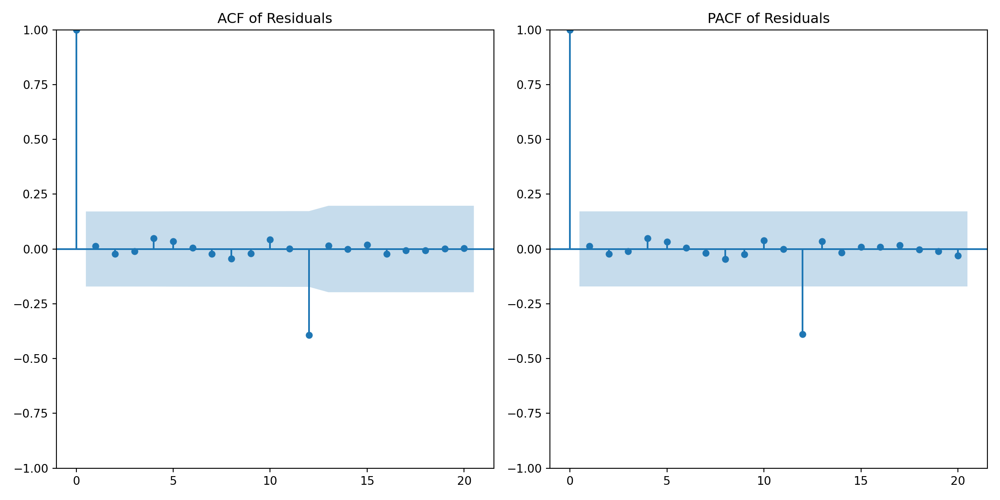

import pandas as pd
import plotnine as p9
from plotnine import *
from plotnine.data import *
import numpy as npTime Series Forecasting with Python: Method 1
Loading packages
Read data
airpassenger = pd.read_csv('AirPassengers.csv')
airpassenger['Month']= pd.to_datetime(airpassenger['Month'])Visualise data
ggplot(airpassenger, aes(x='Month', y='#Passengers'))+geom_line()Training set vs Test set
# Define training and test separation point
split_date = '1960-01'
# Visualize data
g = (
ggplot(airpassenger, aes(x='Month', y='#Passengers')) +
geom_line(color='blue') +
geom_vline(xintercept=pd.to_datetime(split_date), linetype='dashed', color='red') +
labs(
title='Air Passenger Counts Over Time',
x='Month',
y='Number of Passengers'
) +
theme_minimal()
)
# Print plot
print(g)Apply log transformation
airpassenger['Log_Passengers'] = np.log(airpassenger['#Passengers'])
# Define training and test separation point
split_date = '1960-01-01'
# Visualize data
g = (
ggplot(airpassenger, aes(x='Month', y='Log_Passengers')) +
geom_line(color='blue') +
geom_vline(xintercept=pd.to_datetime(split_date), linetype='dashed', color='red') +
labs(
title='Log-Transformed Air Passenger Counts Over Time',
x='Month',
y='Log(Number of Passengers)'
) +
theme_minimal()
)
# Print plot
print(g)Set training data set and test dataset
training_data = airpassenger[airpassenger['Month'] < pd.to_datetime(split_date)]
test_data = airpassenger[airpassenger['Month'] >= pd.to_datetime(split_date)]Plot ACF and PACF for training data
import matplotlib.pyplot as plt
from statsmodels.graphics.tsaplots import plot_acf, plot_pacf
plt.figure(figsize=(12, 6))
plt.subplot(1, 2, 1)
plot_acf(training_data['Log_Passengers'], lags=40, ax=plt.gca())
plt.title('ACF of Log-Transformed Training Data')
plt.subplot(1, 2, 2)
plot_pacf(training_data['Log_Passengers'], lags=40, ax=plt.gca(), method='ywm')
plt.title('PACF of Log-Transformed Training Data')
plt.tight_layout()
plt.show()Apply First-Order Seasonal Difference and Obtain ACF and PACF
airpassenger['LogSeasonal_Diff'] = airpassenger['Log_Passengers'] - airpassenger['Log_Passengers'].shift(12)
airpassenger.head(14)| Month | #Passengers | Log_Passengers | LogSeasonal_Diff | |
|---|---|---|---|---|
| 0 | 1949-01-01 | 112 | 4.718499 | NaN |
| 1 | 1949-02-01 | 118 | 4.770685 | NaN |
| 2 | 1949-03-01 | 132 | 4.882802 | NaN |
| 3 | 1949-04-01 | 129 | 4.859812 | NaN |
| 4 | 1949-05-01 | 121 | 4.795791 | NaN |
| 5 | 1949-06-01 | 135 | 4.905275 | NaN |
| 6 | 1949-07-01 | 148 | 4.997212 | NaN |
| 7 | 1949-08-01 | 148 | 4.997212 | NaN |
| 8 | 1949-09-01 | 136 | 4.912655 | NaN |
| 9 | 1949-10-01 | 119 | 4.779123 | NaN |
| 10 | 1949-11-01 | 104 | 4.644391 | NaN |
| 11 | 1949-12-01 | 118 | 4.770685 | NaN |
| 12 | 1950-01-01 | 115 | 4.744932 | 0.026433 |
| 13 | 1950-02-01 | 126 | 4.836282 | 0.065597 |
airpassenger.tail(12)| Month | #Passengers | Log_Passengers | LogSeasonal_Diff | |
|---|---|---|---|---|
| 132 | 1960-01-01 | 417 | 6.033086 | 0.146982 |
| 133 | 1960-02-01 | 391 | 5.968708 | 0.133897 |
| 134 | 1960-03-01 | 419 | 6.037871 | 0.031518 |
| 135 | 1960-04-01 | 461 | 6.133398 | 0.151984 |
| 136 | 1960-05-01 | 472 | 6.156979 | 0.116724 |
| 137 | 1960-06-01 | 535 | 6.282267 | 0.125288 |
| 138 | 1960-07-01 | 622 | 6.432940 | 0.126665 |
| 139 | 1960-08-01 | 606 | 6.406880 | 0.080731 |
| 140 | 1960-09-01 | 508 | 6.230481 | 0.092754 |
| 141 | 1960-10-01 | 461 | 6.133398 | 0.124585 |
| 142 | 1960-11-01 | 390 | 5.966147 | 0.074503 |
| 143 | 1960-12-01 | 432 | 6.068426 | 0.064539 |
Remove rows with NaN values from the airpassenger DataFrame
airpassenger.dropna(inplace=True)
# Display the cleaned DataFrame
print(airpassenger) Month #Passengers Log_Passengers LogSeasonal_Diff
12 1950-01-01 115 4.744932 0.026433
13 1950-02-01 126 4.836282 0.065597
14 1950-03-01 141 4.948760 0.065958
15 1950-04-01 135 4.905275 0.045462
16 1950-05-01 125 4.828314 0.032523
.. ... ... ... ...
139 1960-08-01 606 6.406880 0.080731
140 1960-09-01 508 6.230481 0.092754
141 1960-10-01 461 6.133398 0.124585
142 1960-11-01 390 5.966147 0.074503
143 1960-12-01 432 6.068426 0.064539
[132 rows x 4 columns]Plot ACF and PACF of the log-seasonally differenced series
fig, axes = plt.subplots(1, 2, figsize=(16, 6))
# ACF plot
plot_acf(airpassenger['LogSeasonal_Diff'], ax=axes[0], lags=40)
axes[0].set_title('ACF of Log-Seasonally Differenced Series')
# PACF plot
plot_pacf(airpassenger['LogSeasonal_Diff'], ax=axes[1], lags=40)
axes[1].set_title('PACF of Log-Seasonally Differenced Series')
plt.tight_layout()
plt.show()Apply First-Order Differencing
airpassenger['LogSeasonal_Diff.NonSeaDiff'] = airpassenger['LogSeasonal_Diff'] - airpassenger['LogSeasonal_Diff'].shift(1)
airpassenger.head(14)
airpassenger.dropna(inplace=True)fig, axes = plt.subplots(1, 2, figsize=(16, 6))
# ACF plot
plot_acf(airpassenger['LogSeasonal_Diff.NonSeaDiff'], ax=axes[0], lags=40)
axes[0].set_title('ACF of Log-Seasonally Differenced and Non Seasonally Differenced Series')
# PACF plot
plot_pacf(airpassenger['LogSeasonal_Diff.NonSeaDiff'], ax=axes[1], lags=40)
axes[1].set_title('PACF of Log-Seasonally Differenced and Non-Seasonally DIfferenced Series')
plt.tight_layout()
plt.show()Fit ARIMA(0,1,1)(0,1,1)[12] model
from statsmodels.tsa.arima.model import ARIMA
model = ARIMA(airpassenger['Log_Passengers'], order=(0, 1, 1), seasonal_order=(0, 1, 1, 12))
fitted_model = model.fit()
forecast = fitted_model.forecast(steps=13)
forecastC:\Users\DELL\AppData\Local\Programs\Python\Python312\Lib\site-packages\statsmodels\tsa\base\tsa_model.py:473: ValueWarning: An unsupported index was provided and will be ignored when e.g. forecasting.
C:\Users\DELL\AppData\Local\Programs\Python\Python312\Lib\site-packages\statsmodels\tsa\base\tsa_model.py:473: ValueWarning: An unsupported index was provided and will be ignored when e.g. forecasting.
C:\Users\DELL\AppData\Local\Programs\Python\Python312\Lib\site-packages\statsmodels\tsa\base\tsa_model.py:473: ValueWarning: An unsupported index was provided and will be ignored when e.g. forecasting.
C:\Users\DELL\AppData\Local\Programs\Python\Python312\Lib\site-packages\statsmodels\tsa\base\tsa_model.py:836: ValueWarning: No supported index is available. Prediction results will be given with an integer index beginning at `start`.
C:\Users\DELL\AppData\Local\Programs\Python\Python312\Lib\site-packages\statsmodels\tsa\base\tsa_model.py:836: FutureWarning: No supported index is available. In the next version, calling this method in a model without a supported index will result in an exception.131 6.110396
132 6.053819
133 6.171650
134 6.199400
135 6.232725
136 6.368919
137 6.507530
138 6.503117
139 6.324834
140 6.209196
141 6.063624
142 6.168173
143 6.206753
Name: predicted_mean, dtype: float64Residual Analysis
import seaborn as sns
# Compute residuals
train_forecast = fitted_model.fittedvalues
residuals = airpassenger['Log_Passengers'] - train_forecast
# Plot residuals
plt.figure(figsize=(10, 6))
plt.plot(airpassenger['Month'], residuals, label='Residuals', color='purple')
plt.axhline(0, color='black', linewidth=1)
plt.title('Residuals from ARIMA Model')
plt.xlabel('Month')
plt.ylabel('Residuals')
plt.legend()
plt.grid(True)
plt.show()
# Plot the ACF and PACF of residuals to check for autocorrelation
plt.figure(figsize=(12, 6))
plt.subplot(1, 2, 1)
plot_acf(residuals, lags=20, ax=plt.gca())
plt.title('ACF of Residuals')
plt.subplot(1, 2, 2)
plot_pacf(residuals, lags=20, ax=plt.gca())
plt.title('PACF of Residuals')
plt.tight_layout()
plt.show()
# Histogram of residuals to check for normality
plt.figure(figsize=(10, 6))
sns.histplot(residuals, kde=True, color='purple', bins=20)
plt.title('Histogram of Residuals')
plt.xlabel('Residuals')
plt.ylabel('Frequency')
plt.show()
Back-transform forecasted log values to original scale
forecast_original = np.exp(forecast)
test_data['forecast_log'] = forecast
test_data['forecast_passengers'] = forecast_original
test_dataC:\Users\DELL\AppData\Local\Temp\ipykernel_28548\3410330437.py:2: SettingWithCopyWarning:
A value is trying to be set on a copy of a slice from a DataFrame.
Try using .loc[row_indexer,col_indexer] = value instead
See the caveats in the documentation: https://pandas.pydata.org/pandas-docs/stable/user_guide/indexing.html#returning-a-view-versus-a-copy
C:\Users\DELL\AppData\Local\Temp\ipykernel_28548\3410330437.py:3: SettingWithCopyWarning:
A value is trying to be set on a copy of a slice from a DataFrame.
Try using .loc[row_indexer,col_indexer] = value instead
See the caveats in the documentation: https://pandas.pydata.org/pandas-docs/stable/user_guide/indexing.html#returning-a-view-versus-a-copy| Month | #Passengers | Log_Passengers | forecast_log | forecast_passengers | |
|---|---|---|---|---|---|
| 132 | 1960-01-01 | 417 | 6.033086 | 6.053819 | 425.735873 |
| 133 | 1960-02-01 | 391 | 5.968708 | 6.171650 | 478.975744 |
| 134 | 1960-03-01 | 419 | 6.037871 | 6.199400 | 492.453690 |
| 135 | 1960-04-01 | 461 | 6.133398 | 6.232725 | 509.141110 |
| 136 | 1960-05-01 | 472 | 6.156979 | 6.368919 | 583.426973 |
| 137 | 1960-06-01 | 535 | 6.282267 | 6.507530 | 670.168960 |
| 138 | 1960-07-01 | 622 | 6.432940 | 6.503117 | 667.218211 |
| 139 | 1960-08-01 | 606 | 6.406880 | 6.324834 | 558.265074 |
| 140 | 1960-09-01 | 508 | 6.230481 | 6.209196 | 497.301356 |
| 141 | 1960-10-01 | 461 | 6.133398 | 6.063624 | 429.930518 |
| 142 | 1960-11-01 | 390 | 5.966147 | 6.168173 | 477.313188 |
| 143 | 1960-12-01 | 432 | 6.068426 | 6.206753 | 496.087694 |
Compute MSE
from sklearn.metrics import mean_squared_error
mse = mean_squared_error(test_data['#Passengers'], test_data['forecast_passengers'])
print(f'Mean Squared Error (MSE): {mse}')Mean Squared Error (MSE): 5279.13204916217